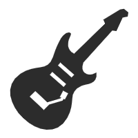

iCreate
-GuitarSimulator
首页
Player
说明
壁纸
交互式指板
主题:
类型:
None (Highlight Off)
Harmonic Chromatic
Ionian (Major)
Aeolian (Minor)
Dorian
Phrygian
Lydian
Mixolydian
Locrian
Major Pentatonic
Minor Pentatonic
Blues
Double Harmonic (Flamenco)
Harmonic Minor
Melodic Minor
Whole Tone
on
C
C♯
D
D♯
E
F
F♯
G
G♯
A
A♯
B
制表编辑器
撤销
重做
多行光标
覆写
加载预设：
Choose Song
Tetris (fancy version!)
Ievan Polkka
Still Alive (Portal)
My Song (Isaiah Odhner)
Release Pressure-DrumKit
Enjoy Life-SkyPiano
Online-GuitarTuner